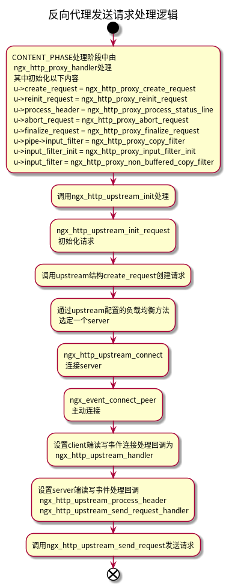
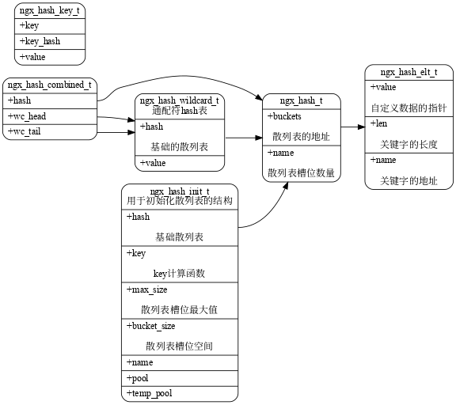

Nginx
Table of Contents
内部跳转, 内部跳转时如果想在rewrite后的location中使用前面location中所设置的变量, 则需要在前面的location中设置set变量, 不可以在server块中配置, 否则, 在跳转到新的location后, 会使用server块的默认变量值
1. nginx http
1.1. http模块结构
typedef struct { /* 解析配置前调用 */ ngx_int_t (*preconfiguration)(ngx_conf_t *cf); /* 解析配置后调用 */ ngx_int_t (*postconfiguration)(ngx_conf_t *cf); /* 创建main配置 */ void *(*create_main_conf)(ngx_conf_t *cf); /* 初始化main配置 */ char *(*init_main_conf)(ngx_conf_t *cf, void *conf); /* 创建server配置 */ void *(*create_srv_conf)(ngx_conf_t *cf); /* */ char *(*merge_srv_conf)(ngx_conf_t *cf, void *prev, void *conf); /**/ void *(*create_loc_conf)(ngx_conf_t *cf); /**/ char *(*merge_loc_conf)(ngx_conf_t *cf, void *prev, void *conf); } ngx_http_module_t;
1.2. 处理阶段
- NGX_HTTP_POST_READ_PHASE
- 在接收到完整的http头部后处理
- NGX_HTTP_SERVER_REWRITE_PHASE
- 在将uri和location匹配前，修改请求的URI（重定向）
- NGX_HTTP_FIND_CONFIG_PHASE
- 根据请求的uri，查找location
- NGX_HTTP_REWRITE_PHASE
- 在匹配到location后，再修改请求的uri的阶段
- NGX_HTTP_POST_REWRITE_PHASE
- 这个阶段用在rewrite重写uri之后，防止nginx配置错误导致死循环，用变量记录rewrite次数，超过10次认为死循环，返回500。
- NGX_HTTP_PREACCESS_PHASE
- 在NGX_HTTP_ACCESS_PHASE阶段决定请求的访问权限前的处理阶段。
- NGX_HTTP_ACCESS_PHASE
- 用户让http模块判断是否允许请求访问nginx。
- NGX_HTTP_POST_ACCESS_PHASE
- 当NGX_HTTP_ACCESS_PHASE阶段返回不允许的错误码时（例如NGX_HTTP_FORBIDDEN），这个阶段发送相应的错误相应。
- NGX_HTTP_PRECONTENT_PHASE
- 目前由ngx_http_mirror_module和ngx_http_try_files_module模块使用。
- NGX_HTTP_CONTENT_PHASE
- 用于处理请求内容的阶段。
- NGX_HTTP_LOG_PHASE
- 记录日志的阶段。
1.3. NGX_HTTP_CONTENT_PHASE的两种介入方式
和其他阶段相同，通过向ngx_http_core_main_conf_t结构中的phases数组中添加处理方法。
static ngx_int_t ngx_http_gzip_static_init(ngx_conf_t *cf) { ngx_http_handler_pt *h; ngx_http_core_main_conf_t *cmcf; cmcf = ngx_http_conf_get_module_main_conf(cf, ngx_http_core_module); h = ngx_array_push(&cmcf->phases[NGX_HTTP_CONTENT_PHASE].handlers); *h = ngx_http_gzip_static_handler; return NGX_OK; }
通过向location配置结构ngx_http_core_loc_conf_t中的handler成员赋值，来定义处理方法。
static char * ngx_http_proxy_pass(ngx_conf_t *cf, ngx_command_t *cmd, void *conf) { ngx_http_core_loc_conf_t *clcf; clcf = ngx_http_conf_get_module_loc_conf(cf, ngx_http_core_module); clcf->handler = ngx_http_proxy_handler; ...... }
注意：
- 第一种方式中，通过向phase数组中添加处理函数，可以由任意个模块在NGX_HTTP_CONTENT_PHASE处理。
- 如果采用第二种方式，设置ngx_http_core_loc_conf_t中的handler成员，则location内只能由一个模块处理。
- 如果两种方式都设置的话，只有第二种方式生效。
- 如果多个模块都使用第二种方式设置，则在location中，后面的配置会覆盖前面设置的handler回调。
1.4. 初始化
1.5. header filter和body filter
1.6. 连接处理过程

1.7. 阶段处理
checker方法整理：
- NGX_HTTP_SERVER_REWRITE_PHASE ngx_http_core_rewrite_phase
- NGX_HTTP_FIND_CONFIG_PHASE ngx_http_core_find_config_phase
- NGX_HTTP_REWRITE_PHASE ngx_http_core_rewrite_phase
- NGX_HTTP_POST_REWRITE_PHASE ngx_http_core_post_rewrite_phase
- NGX_HTTP_ACCESS_PHASE ngx_http_core_access_phase
- NGX_HTTP_POST_ACCESS_PHASE ngx_http_core_post_access_phase
- NGX_HTTP_CONTENT_PHASE ngx_http_core_content_phase
- ngx_http_core_generic_phase
1.8. 反向代理请求处理

2. nginx epoll
2.1. epoll处理事件
3. 数据结构
3.1. 内存池
3.1.1. 结构关系
typedef struct ngx_pool_large_s ngx_pool_large_t; struct ngx_pool_large_s { ngx_pool_large_t *next; void *alloc; }; typedef struct { u_char *last; u_char *end; ngx_pool_t *next; ngx_uint_t failed; } ngx_pool_data_t; struct ngx_pool_s { ngx_pool_data_t d; size_t max; ngx_pool_t *current; ngx_chain_t *chain; ngx_pool_large_t *large; ngx_pool_cleanup_t *cleanup; ngx_log_t *log; };
3.1.2. 接口
ngx_pool_t *ngx_create_pool(size_t size, ngx_log_t *log); void ngx_destroy_pool(ngx_pool_t *pool); void ngx_reset_pool(ngx_pool_t *pool); void *ngx_palloc(ngx_pool_t *pool, size_t size); void *ngx_pnalloc(ngx_pool_t *pool, size_t size); void *ngx_pcalloc(ngx_pool_t *pool, size_t size); void *ngx_pmemalign(ngx_pool_t *pool, size_t size, size_t alignment); ngx_int_t ngx_pfree(ngx_pool_t *pool, void *p);
3.2. hash
3.2.1. 数据结构关系

说明:
- 实际的ngx_hash_elt_t在内存中的大小由name成员的长度决定;

3.2.2. 初始化流程
- 精确匹配正则初始化
通配符hash正则初始化 通配符正则的初始化通过接口
ngx_hash_wildcard_init进行初始化，这个函数中又使用了递归调用。以下值说明大致的初始化流程和初始化后的结果。首先在初始化之前，需要对key值进行排序，以下摘抄nginx一段初始化代码：
if (conf->keys->dns_wc_head.nelts) { ngx_qsort(conf->keys->dns_wc_head.elts, (size_t) conf->keys->dns_wc_head.nelts, sizeof(ngx_hash_key_t),ngx_http_cmp_referer_wildcards); hash.hash = NULL; hash.temp_pool = cf->temp_pool; if (ngx_hash_wildcard_init(&hash, conf->keys->dns_wc_head.elts, conf->keys->dns_wc_head.nelts) != NGX_OK) return NGX_CONF_ERROR; conf->hash.wc_head = (ngx_hash_wildcard_t *) hash.hash; }
- 使用 ‘.’ 将域名拆分，首先将所有域名的第一段保存在一个数组（curr_names）中，注意curr_names中的name都不重复。
- 在上一步骤中，如果多个域名第一段相同，则将这些域名的第二段保存在另一个数组（next_names）中，然后递归调用
ngx_hash_wildcard_init进行初始化，并将hash表的地址保存在上一部中的curr_names中的value中。 - 如此直到初始化完成。
说明：
3.2.3. 添加流程
3.3. chain buf
struct ngx_chain_s { ngx_buf_t *buf; ngx_chain_t *next; }; struct ngx_buf_s { u_char *pos; u_char *last; off_t file_pos; off_t file_last; u_char *start; /* start of buffer */ u_char *end; /* end of buffer */ ngx_buf_tag_t tag; ngx_file_t *file; ngx_buf_t *shadow; /* the buf's content could be changed */ unsigned temporary:1; /* * the buf's content is in a memory cache or in a read only memory * and must not be changed */ unsigned memory:1; /* the buf's content is mmap()ed and must not be changed */ unsigned mmap:1; unsigned recycled:1; unsigned in_file:1; unsigned flush:1; unsigned sync:1; unsigned last_buf:1; unsigned last_in_chain:1; unsigned last_shadow:1; unsigned temp_file:1; /* STUB */ int num; };
4. 正则使用
5. REUSEPORT
6. UPSTREAM
6.1. non buffer
static void ngx_http_upstream_process_non_buffered_downstream(ngx_http_request_t *r) static void ngx_http_upstream_process_non_buffered_upstream(ngx_http_request_t *r, ngx_http_upstream_t *u) static void ngx_http_upstream_process_non_buffered_request(ngx_http_request_t *r,ngx_uint_t do_write) ngx_int_t ngx_http_upstream_non_buffered_filter(void *data, ssize_t bytes)